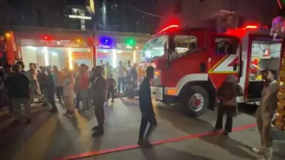

BD Barguna News
সত্যের সন্ধানে, মানুষের পাশে।
সোশ্যাল মিডিয়া
কক্সবাজারে আবারো আবাসিক হোটেলে আগুন, ভেতরে ছিলেন শতাধিক পর্যটক
📅 প্রকাশিত: ১২ নভেম্বর, ২০২৬ এ ১০:৪৯ PM

আবারও কক্সবাজারে হোটেল-মোটেল জোনে অগ্নিকাণ্ডের ঘটনা ঘটেছে। তবে এই ঘটনায় কোনো হতাহতের খবর পাওয়া যায়নি।
বিজ্ঞাপন
বৃহস্পতিবার সন্ধ্যা সাড়ে ৬টার দিকে শহরের কলাতলী এলাকার 'কক্স অ্যাম্বাসেডর' নামে একটি হোটেলের ৮ম তলায় এই আগুনের সূত্রপাত হয়।
খবর পেয়ে ফায়ার সার্ভিসের দুইটি ইউনিট কাজ শুরু করে। আগুন ছড়িয়ে পড়ার শঙ্কায় হোটেলটিতে অবস্থান করা শতাধিক পর্যটকসহ আশপাশের হোটেলগুলোর পর্যটক ও স্থানীয় বাসিন্দারা রাস্তায় নেমে আসেন।
বিষয়টি নিশ্চিত করেছেন কক্সবাজার ফায়ার সার্ভিস ও সিভিল ডিফেন্সের উপ-পরিচালক সৈয়দ মোর্শেদ হোসেন।
তিনি বলেন, হোটেলটির ৮ম তলার একটি কক্ষে এসি থেকে আগুন লেগেছে। ঘটনাস্থলে ফায়ার সার্ভিস কাজ করছে। পরিস্থিতি নিয়ন্ত্রণে রয়েছে।
প্রসঙ্গত, সাম্প্রতিক সময়ে কক্সবাজার জেলার বিভিন্ন পর্যটন এলাকায় একের পর এক অগ্নিকাণ্ডের ঘটনা ঘটছে। ইতোপূর্বে সর্বশেষ মঙ্গলবার (১০ নভেম্বর) ভোর ৬টার দিকে শহরের কলাতলী হোটেল-মোটেল জোনের সৈকতপাড়া সড়কে একটি হোটেল সংলগ্ন বসতঘরে আগুন লাগে। এতে অন্তত চারটি বসতঘর পুড়ে যায়। ওই সময় খবর পেয়ে ফায়ার সার্ভিসের চারটি ইউনিট ঘটনাস্থলে পৌঁছে আগুন নিয়ন্ত্রণে আনে।
গত ২৩ অক্টোবর শহরের সুগন্ধা পয়েন্টে অবস্থিত আবাসিক হোটেল সি প্রিন্সেসেও অগ্নিকাণ্ডের ঘটনা ঘটে। তবে ফায়ার সার্ভিসের দ্রুত তৎপরতায় আগুন নিয়ন্ত্রণে আসায় বড় ধরনের ক্ষতি বা হতাহতের ঘটনা ঘটেনি।
১৭ অক্টোবর ঘটে সবচেয়ে বড় ও মর্মান্তিক ঘটনা। এদিন উখিয়া উপজেলার ইনানীর পাটুয়ারটেক সৈকত এলাকায় কাঠ, বাঁশ ও টিন দিয়ে তৈরি দুইতলাবিশিষ্ট টুপটুপ রেস্টো এন্ড রিসোর্টে ভয়াবহ অগ্নিকাণ্ডে অন্তত ১১ জনের মৃত্যু হয়।
ভোরে রিসোর্টের পর্যটকরা ঘুমিয়ে থাকা অবস্থায় আগুন ছড়িয়ে পড়ে। এ ঘটনায় আরও কয়েকজন আহত হন। অগ্নিকাণ্ডের কারণ অনুসন্ধানে অতিরিক্ত জেলা ম্যাজিস্ট্রেটকে প্রধান করে তদন্ত কমিটি গঠন করা হয়।
এদিকে একের পর এক এসব অগ্নিকাণ্ডের ঘটনায় কক্সবাজারের হোটেল-মোটেল ও পর্যটন স্থাপনাগুলোর অগ্নিনিরাপত্তা ব্যবস্থা নিয়ে নতুন করে উদ্বেগ তৈরি হয়েছে।
এমএইচ
Google News Icon
BD Barguna News খবর পেতে গুগল নিউজ চ্যানেল ফলো করুন
বিষয়:
কক্সবাজার
কক্সবাজার সদর
সর্বশেষ
১
নীল নদ থেকে ইউফ্রেটিস, বৃহত্তর ইসরাইল প্রতিষ্ঠার পরিকল্পনায় যুক্তরাষ্ট্রের ভূমিকা
২
আরও ভালো গল্পে অভিনয় করার প্রত্যাশা রাখি: ফারজানা চুমকি
৩
দুই রপ্তানিকারকের চালানে গরমিল, রাজস্ব ফাঁকির পরিমাণ দেড় কোটি টাকা
৪
ককটেল বিস্ফোরণের ঘটনায় ঢাবির শিক্ষার্থী সাময়িক বহিষ্কার
৫
পতিত অপশক্তির অপতৎপরতার বিরুদ্ধে কঠোর পদক্ষেপ নিতে হবে: খেলাফত মজলিস
এলাকার খবর
বিভাগ
জেলা
উপজেলা
খুঁজুন
সম্পর্কিত
সুবর্ণচরে মোটরসাইকেল নিয়ন্ত্রণ হারিয়ে তিন আরোহীর মৃত্যু
সুবর্ণচরে মোটরসাইকেল নিয়ন্ত্রণ হারিয়ে তিন আরোহীর মৃত্যু
১ ঘণ্টা আগে
ইউপি নির্বাচন করতে চাকরি থেকে প্রধান শিক্ষকের পদত্যাগ
ইউপি নির্বাচন করতে চাকরি থেকে প্রধান শিক্ষকের পদত্যাগ
১ ঘণ্টা আগে
বিদেশি প্রেসক্রিপশনে দেশ চলবে না - হামিদুর রহমান আজাদ
বিদেশি প্রেসক্রিপশনে দেশ চলবে না - হামিদুর রহমান আজাদ
১ ঘণ্টা আগে
তিতাসে এমপির অনুষ্ঠানে বিএনপির দুই গ্রুপের সংঘর্ষ, আহত ১০
তিতাসে এমপির অনুষ্ঠানে বিএনপির দুই গ্রুপের সংঘর্ষ, আহত ১০
প্রকাশ : ১২ নভেম্বর ২০২৬, ২১: ৫৩